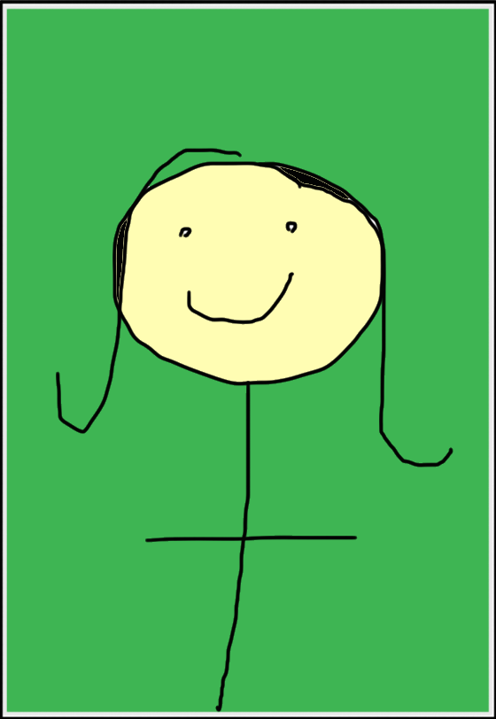

Traversi
TraversiMy name is Steven Traversi, and I play guitar. Hello ladies. Hot damn. Furthermore, I intern at the Exploratorium and achieve real happiness from my work. I currently study computer science at the University of California. More stuff goes here eventually, but for now: It was in Vienna, fabulous city of beautiful parks and delightful cafes, the exquisite setting for glamorous ladies and their dashing suitors that the waltz blazed most brilliantly. Sparks blew to far corners of the universe and started fires that warmed the hearts of people all over the world, but it is romantic, lovely Vienna that of all cities remains most inseparably linked with the waltz. "It is to Vienna, said the great Johann Strauss, composer of the Blue Danube and a hundred and one other superb waltzes, "that I owe everything I am. I drink to my beloved native city. Vienna! May she grow and prosper!"